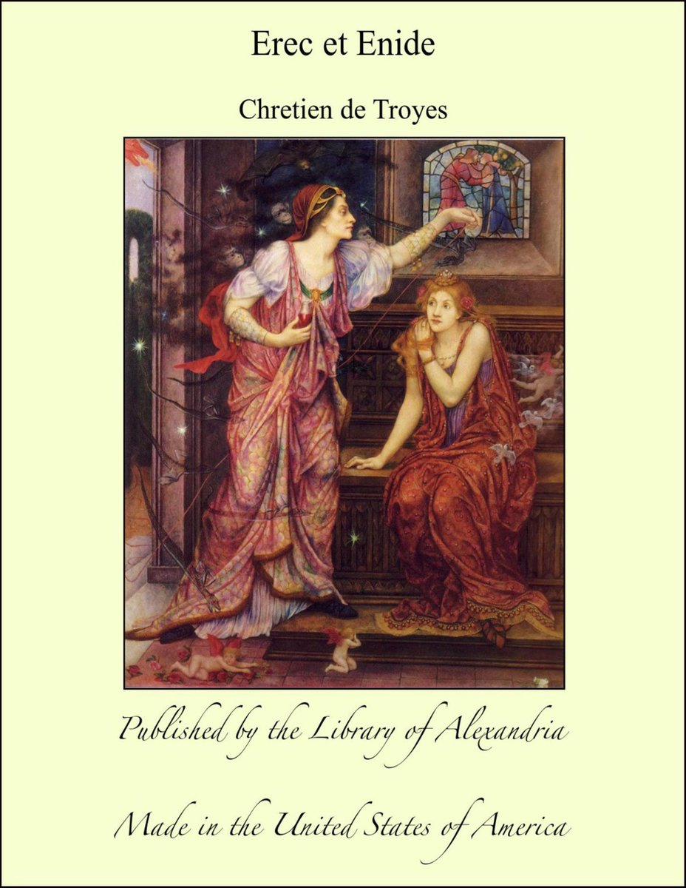

Wat is bijzonder aan de roman Eric et Enide?
Eric et Enide is bijzonder omdat het de eerste roman is die Chrétien de Troyes geschreven heeft. Het is ook een van de oudste Arthurromans, wat het extra bijzonder maakt. Dit werk is ook in veel talen vertaald, omdat het zo populair was. Veel andere auteurs van Arthurromans zijn ook door hem geïnspireerd. Wat ook bijzonder is, is dat Enide de enige vrouw is die in een titel van een werk van Chrétien de Troyes wordt vermeld.